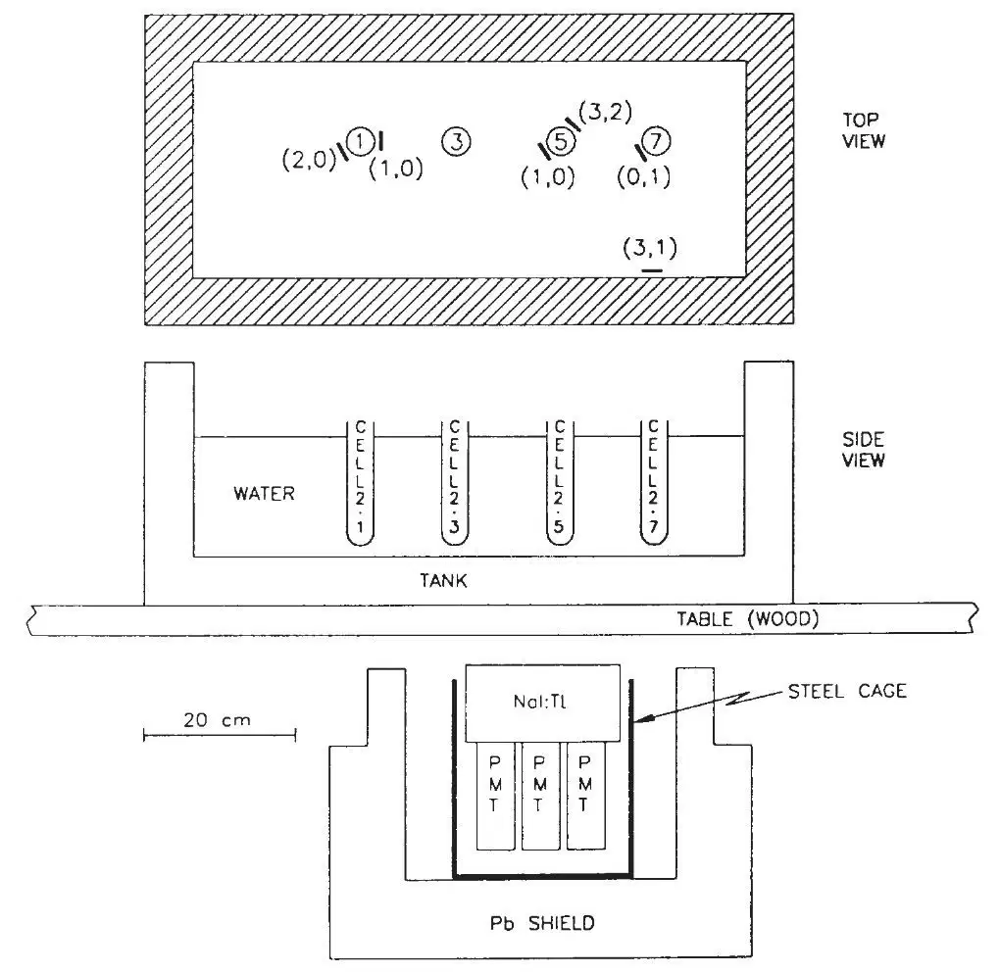
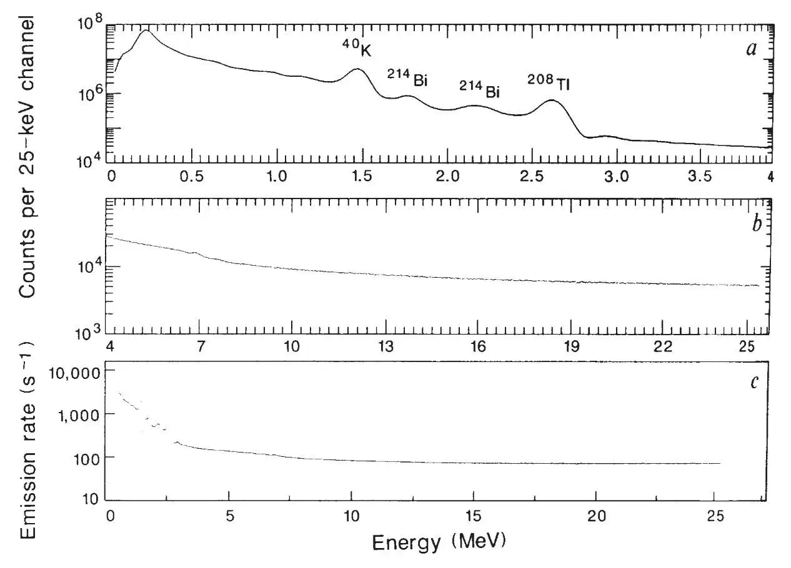
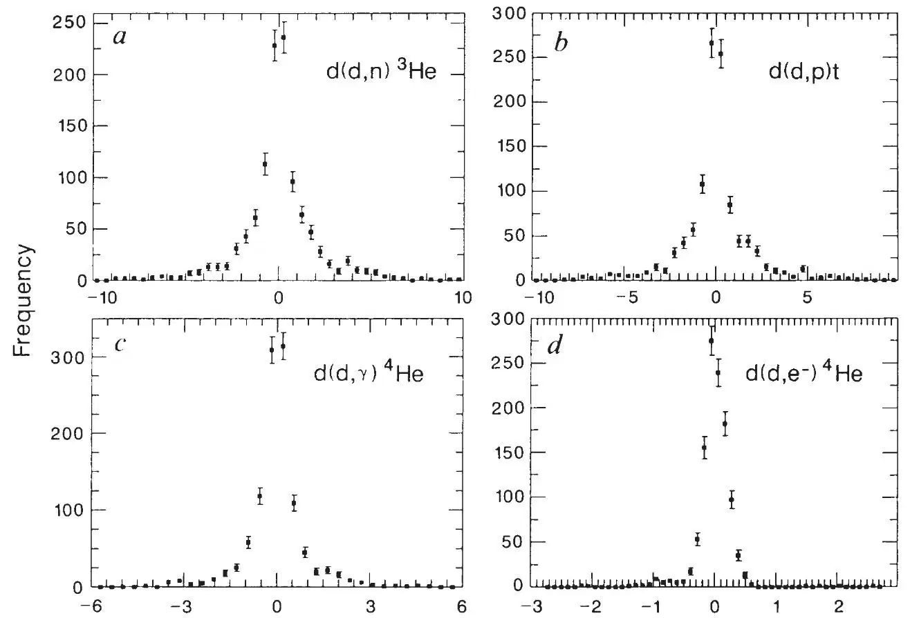
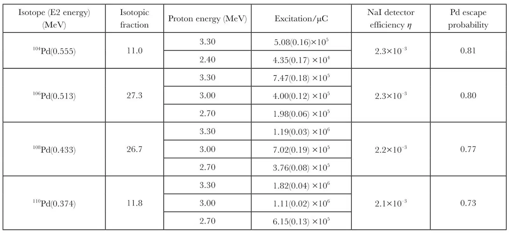
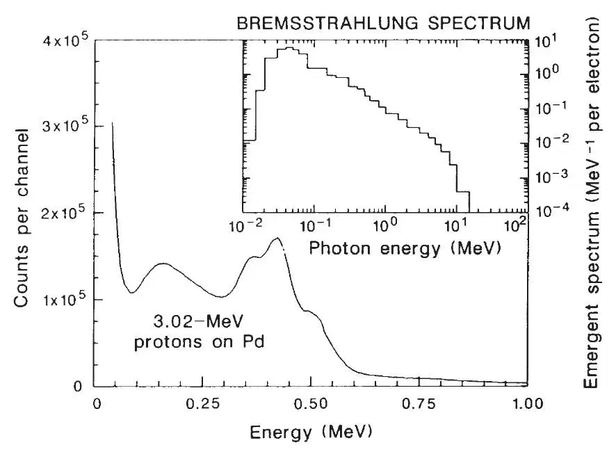
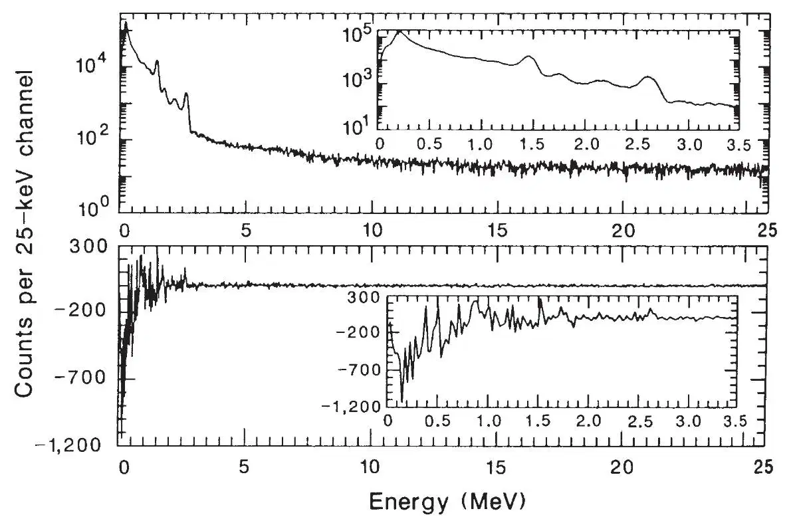

中文
中文M. H. Salamon et al.
Editor’s Note
Of the many experiments conducted worldwide to investigate the claim of Martin Fleischmann and Stanley Pons to have carried out nuclear fusion by benchtop electrolysis in 1989, those reported here provided some of the most compelling contrary results. Michael Salamon was a physicist at the same university (Utah) as Pons, and he obtained Pons’ agreement to re-run the experiments using the same apparatus. After exhaustive trials, Salamon’s team found no evidence of “cold fusion”. Pons’ claim that excess heat had been generated in one event after a power failure had prevented the computer from collecting data only added to the growing scepticism and suspicion about the original claim. At one point, these experiments provoked threats of legal action against Salamon. 中文
Emissions of γ-rays from the cold-fusion cells used by Pons and Fleischmann were monitored in Pons’ laboratory at the University of Utah by NaI detectors nearly continuously over a five-week period. No evidence of fusion activity was observed above power limits varying between 10–12 and 10–6 W for the known fusion reactions. In addition, neutron-track detectors indicated an integrated upper limit of approximately 1 emitted neutron per second from any of the cold-fusion cells over a period of 67 hours. 中文
PONS and Fleischmann1 claim to have achieved “cold fusion” of deuterium nuclei in electrolytic cells containing palladium cathodes and D2O (with 0.1 M LiOD) electrolyte, which produced excess heat of the order of a few watts. Their claim was based on the lack of a known electrochemical mechanism for the observed heat excess and the emission of γ-rays and neutrons at levels slightly above background. These latter data have been criticized2-4, but reports of tritium production in similar cells5 and the discrepancy between cell power inputs and outputs in several laboratories6 have sustained the controversy despite a large number of negative results4. 中文
The known d + d and d + p reactions and their energy yields (Q) are7: d(d, p)t(Q = 4.03 MeV); d(d, n)3 He (Q = 3.27 MeV); d(d, γ)4 He (Q = 23.85 MeV); d(d, e–)4 He (internal conversion) (Q = 23.85 MeV); d(p, γ)3 He (Q = 5.49 MeV). 中文
Several weeks after his initial press announcement, Pons allowed us into his laboratory to make independent measurements of any radiation emanating from his operating electrolytic cells. Using equipment that was immediately available, a lead-shielded sodium iodide (NaI) detector (8 × 4 in.) was installed below his cells (Fig. 1) and collected data nearly continuously for over five weeks in a γ-ray energy range of 0.1–25.5 MeV. In addition, several neutron detectors, which integrated the neutron flux over a period of approximately three days, were placed within the water tank adjacent to the cells; these were made of 235U foils sandwiched between nuclear-track-detecting plastic film. 中文

Fig. 1. Side view of the geometry of the electrolytic cells and NaI detector, and top view of the cells with neutron-detecting sandwiches in place (thickline segments). Cells 2-1, 2-5 and 2-7 have palladium cathodes with diameters/lengths (in cm) respectively of 0.4/1.25, 0.4/10.0 and 0.1/10.0; cell 2-3 has a platinum cathode of dimensions 0.1/10.0. The two numbers (n, m) shown for each sandwich in the top view are the number of fission fragments counted in the plastic film adjacent to the uranium foil (without, with) Cd covers. Only one plastic film per foil was analysed. 中文
Nal Detection of γ-rays
Four open cells (no gas collection) underwent electrolysis nearly continuously while the NaI detector was collecting data (9 May to 16 June). These cells consisted of D2O (0.1 M LiOD) electrolyte with platinum anodes; the cathodes were as described in Fig. 1. The cells were run in constant-current mode, and current settings were varied over the five-week interval. 中文
The NaI detector system was placed under the table supporting the water tank and cells, so as not to interfere with other research activities in Pons’ laboratory. Any γ-rays produced in the cells would thus pass through water, water tank and table before being detected by the 8 × 4 in. NaI detector. The energy-dependent, absolute efficiency for γ-ray detection in the photo-peak (corresponding to complete γ-ray energy conversion within the scintillator) was determined with standard γ-ray sources in a separate laboratory, where an identical configuration of water, tank, table and detector could be installed or removed at will. Radiation limits given below are based on the absolute efficiency for a source at the location of cell 2-1. 中文
Spectral data accumulated by a pulse-height analyser were downloaded to a microcomputer every 0.5 or 1 h (live time) continuously over the five-week observation period, thereby minimizing the effect of integrated background on transient signals. The system’s gain was set so that γ-rays in the energy interval 0.1–25.5 MeV were recorded. An aggregate spectrum corresponding to 785 h of operation is shown in Fig. 2a, b. 中文

Fig. 2. a, b, Aggregate γ-ray spectrum for 785 h of live collection time. The dominant background lines are 40K (1.4608 MeV), 214Bi (1.7645 Mev), 208Tl (2.6146 MeV), a backscatter peak at ~0.23 MeV, and a broad peak at ~2.17 MeV due to two lines, 214Bi (2.1186, 2.2042 MeV). The detector energy resolution is given by R = 0.07E–1/2(1+1.3/E)1/2, with E in MeV, where the leading factor is the detector’s optimal resolution and the additional factor is caused by the presence of noise at the charge-integrating input of the pulse-height analyser’s analog-to-digital converter. The integral nonlinearity of the system electronics was found to be <0.1% over the interval 0.1–3.5 MeV, and 0.2% over the full interval 0.1–25.5 MeV. System gain variations (owing to phototube drift, for example) were monitored and found to be <3.5% over the full five-week interval and <0.5% over any 24-h interval; c, γ-ray source emission-rate limit against energy for the general γ-ray search over the range 0.1–25.5 MeV (see text). The probability of falsely rejecting a signal at these limits is <10–3. 中文
Individual spectra (1,116), each of 0.5 or 1.0 h live integration time (for a total of 831.0 hof live time), were searched for transient γ-ray signals above background. Background for each individual spectrum was obtained by averaging several (10–50) successive spectra to form an aggregate spectrum, which was then subtracted from the original spectrum to form a “residual spectrum”. This was performed for each individual spectrum, yielding 1,116 residual spectra. Any transient anomalous signals of duration <10–50 h would then appear in the residual spectra as positive excesses amidst Poisson fluctuations about zero. Signals of longer duration were searched for with even greater sensitivity by performing a similar operation on the collection of aggregate spectra. 中文
To correct for temporal variations in the detector system’s gain and pedestal (the pulse-height-analyser channel corresponding to zero energy), the gain and pedestal were determined for each individual spectrum by fitting to the background γ-ray lines. All spectra were then rescaled to a common gain with zero offset before background subtraction, thus minimizing artefacts in the residual spectra arising from gain or zero shifts, or both. 中文
Neutron flux limits: d(d, n)3He. Neutrons from the d(d, n)3He fusion channel have an initial kinetic energy of 2.45 MeV and a mean free path in water of 4.9 cm, which decreases to ~0.4 cm as the neutron thermalizes. Because each cell is surrounded by several inches of water, most neutrons emitted would thermalize in the surrounding water bath and generate a 2.22-MeV γ-ray from the n(p, d)γ reaction; Monte Carlo calculations show for a point source of 2.45-MeV neutrons located at cell 2-1 that 62% of the emitted neutrons would be captured by hydrogen in the water bath. The absolute photopeak detection efficiency (for cell 2-1), measured with a Am-Be neutron source, was found to be 3.0×10–3. 中文
The presence of a γ-ray signal above background at 2.2 MeV was sought in each residual spectrum by fitting a gaussian (of central energy 2.2 MeV and variance determined by detector resolution) to the residual spectrum in the energy interval 2.0–2.4 MeV. The frequency distribution of the fitted amplitudes, in units of pW of fusion power, is shown in Fig. 3a. Of these 1,114 spectra, the maximum fitted amplitude is 10 pW. In this distribution (and others following) we have excluded two spectra that contained photopeaks due to 22Na and 137Cs sources brought into the laboratory by other personnel. 中文

Fig. 3. Estimated rates for the four d + d fusion reactions. For each of the 1,114 γ-ray spectra obtained from data-collection episodes lasting 0.5–1 h, a residual spectrum was obtained by subtracting an averaged background spectrum from the signal. A fit was then made to each residual by scaling the expected form of the γ-ray spectrum for each reaction; the fit yields a magnitude that can be positive or negative. The figures here are histograms of those 1,114 magnitudes. In a and b, the rate is expressed in units of fusion power (a: pW; b: mW); for c and d, reaction rates are used (c: s–1; d: 103 s–1). In each case the histogram is approximately a gaussian distribution of amplitudes centred around zero, indicating no measurable rates for any of the fusion reactions. 中文
Proton flux limits: d(d, p)t. The fusion channel d(d, p)t (Q= 4.03 MeV) has been a leading candidate for the cold-fusion process, both because of reports of excess tritium production5 and because its reaction products come to rest within the palladium electrode (the range of a 3-MeV proton in palladium is ~30μm; ref. 8), thereby presumably avoiding the paradox of watts of fusion power being generated without observed particle emissions. In fact, a strong and distinct γ-ray signature exists for this reaction: the 3.02-MeV protons cause Coulomb excitation of the even–even isotopes of Pd, whose radiative de-excitations, between 0.37 and 0.56 MeV, are detectable by the NaI detector with efficiencies η given in Table 1. This table, adapted from ref. 9, lists for each Pd isotope its E2 (electric quadrupole) γ-ray energy and thick-target radiation yield (excitations per microcoulomb of protons) for 100% isotopically enriched samples, along with photopeak detection efficiency assuming cell 2-1 as the source, plus a factor accounting for absorption of the E2 γ-ray within the Pd cathode. Figure 4 shows a NaI γ-ray spectrum from a 3-mm target of natural Pd exposed to a beam of 3.02-MeV protons from a Van de Graaf accelerator (W. Schier, personal communication). Peaks at 0.37, 0.43 and 0.51 MeV are observed with their expected strengths. 中文
Table 1. Radiation yields of 3-MeV protons in palladium electrodes


Fig. 4. Electric-quadrupole (E2) γ-ray lines from the isotopes of Pd, excited by 3.02-MeV protons, as measured by a 3 × 3 in. NaI detector. Three lines at 0.37, 0.43 and 0.51 MeV constitute a clear γ-ray signature for the reaction d(d, p)t (a fourth line at 0.56 MeV from 104Pd is too weak to be seen here). Their collective backscatter peak is at ~0.16 MeV. Inset: The emergent bremsstrahlung spectrum for an electron emitted at 20 MeV at the centre of a cylinder of H2O, of height 36 cm and diameter 36 cm. The normalization is for a single electron, with the γ-ray flux integrated over the cylinder surface; the area under the spectrum corresponds to 1.1 photons per electron, including a small δ-function contribution of 0.511-MeV annihilation quanta not shown in the figure. This spectrum was obtained using the Monte Carlo code ETRAN15, which treats the coupled electron–photon transport using a recently developed set of bremsstrahlung cross-sections16. 中文
Convolving these line strengths with the resolution of the NaI detector, and using the efficiency factors from Table 1, a theoretically generated spectrum was scaled to optimally fit the 0.362–0.613-MeV region of each residual spectrum. The frequency distribution of the 1,114 fitted scaling factors (in units of mW of fusion power) is shown in Fig. 3b. None of the scaling factors exceeds 10 mW. This limit is comparable to the sensitivity of the calorimetric measurements made on these cells. 中文
More stringent limits can be placed on this channel by recognizing that the tritium, emitted with kinetic energy of 1.0 MeV, can initiate the t(d, n)4He reaction. By integrating the energy-dependent reaction cross-section10 over the range of the tritium within the Pd, we obtain a d + t fusion probability of 4×10–5 per emitted tritium, assuming a 1∶1 d:Pd ratio in the lattice. (We note that the probability p that a 1.0-MeV triton will produce a neutron within a deuterated palladium lattice via the reaction t(d, n)4He can be expressed as a function of r, the deuterium-to-palladium ratio (by number): p = a0+a1r+a2r2, where a0 = 9.63×10–8, a1 = 4.48×10–5 and a2 = –5.40×10–6. This expression, based on nuclear cross-sections from ref. 10 and hydrogen stopping power from ref. 17, is accurate to  and is valid for 0.4 ≤ r ≤ 1.5.) Monte Carlo calculations show that 39% of the resulting ~14-MeV (centre-of-mass) neutrons will thermalize and be captured by protons within the water tank, yielding a 2.2-MeV γ-ray signal. From the absence of this signal, we obtain an upper limit of the fusion power amplitude of 0.4μW. 中文
and is valid for 0.4 ≤ r ≤ 1.5.) Monte Carlo calculations show that 39% of the resulting ~14-MeV (centre-of-mass) neutrons will thermalize and be captured by protons within the water tank, yielding a 2.2-MeV γ-ray signal. From the absence of this signal, we obtain an upper limit of the fusion power amplitude of 0.4μW. 中文
γ-ray flux limits: d(d, γ)4He, d(p, γ)3He, monoenergetic γ. A search was performed for 23.85-MeV γ-ray from d(d, γ)4He by fitting the expected line profile of a 23.85-MeV γ-ray to the residual spectra over the energy interval 23.6–24.1 MeV. Figure 3c shows the resulting distribution of fitted source emission rates; the maximum fitted rate is 5 s–1, corresponding to a fusion power of 20 pW. A similar search was performed for 5.49-MeV γ-rays from d(p, γ)3He; the maximum fitted source emission rate of 10 s–1 corresponds to a fusion power of ~10 pW. 中文
A general search was also performed throughout the entire 0.1–25.5-MeV energy interval for possible γ-ray lines above background in each residual spectrum. Candidates were required to have at least one channel with counts in excess of 3σ (σ being the propagated Poisson error for that channel’s count) and a summed excess of 9σ in the adjacent channels spanning the full width at half maximum of a γ-ray peak at the sampled energy. The only candidates found were due to imperfect rescaling of the spectrum’s gain and zero relative to averaged background; these were identified by the presence of adjacent positive and negative excursions of equal magnitude, with a zero-crossing at a known background peak position. No other candidate γ-ray lines were found. Allowing for detector efficiency, this yields the relationship between γ-ray emission-rate limit and energy (for cell 2-1) shown in Fig. 2c. 中文
Internal-conversion electron flux limits: d(d, e–)4He. Even though nuclear de-excitation by internal conversion is greatly suppressed relative to radiative de-excitation for low-atomic-mass nuclei and for photon energies much greater than the electron mass, it has been suggested that cold fusion may in fact be occurring via internal conversion11, which would produce an electron that carries off 23.8 MeV in kinetic energy. 中文
Figure 4 shows the calculated bremsstrahlung spectrum emerging from a point-isotropic source of 20-MeV electrons located at the centre of a cylinder of water 36 cm in diameter (~4 MeV are assumed to have been lost within the Pd cathode12). The spectrum, normalized to one source electron, has an integrated area of 1.1 photons per electron. This bremsstrahlung spectrum, modified by detector efficiency, was scaled to obtain an optimal fit to each residual spectrum, giving a best-fit number of bremsstrahlung photons for each spectrum. Figure 3d shows the frequency distribution of the electron emission rate corresponding to the fitted bremsstrahlung photon number. The maximum fitted election emission rate, 2.6×103 electrons per second, corresponds to a fusion power level of 10 nW. 中文
Neutron Detection with Nuclear Track Detectors
A significantly lower limit than the 10 pW discussed above on the mean neutron production rate during a 67-h interval (16–19 May) was obtained with neutron-detecting sandwiches made of 235U-enriched (80%) uranium foils and nuclear-track-detecting plastic, Lexan polycarbonate. Six sandwiches were installed in the water tank containing the cells (Fig. 1); each consisted of two uranium foils, each with an area of 1.4 cm2 and mass ~0.078 g, held between two pieces of 0.01-in.-thick Lexan polycarbonate. One of the two foils was shielded against slow neutrons (<0.5 eV) by two cadmium covers. 中文
The fission capture cross-section for 235U is 1.4 barn at 2.5 MeV, increasing to 580 barn at thermal energies. Some of the neutrons emitted at 2.45 MeV from the cells will be captured by 235U nuclei during their diffusion within the water bath. The fission fragments have a typical range of a few micrometres in U; those that escape the foil enter the plastic film and rupture polymer bonds, thereby creating a nuclear track that can be viewed microscopically after chemical etching with NaOH (ref. 13). (The track registration threshold of Lexan is such that the numerous α particles produced by the 238U component of the U foils do not produce visible tracks.) 中文
The absolute neutron detection efficiency was measured with a 252Cf source in a large water tank, with foil sandwiches placed relative to the source identically to those in Pons’ laboratory, and was found to be 1.3×10–5 fission tracks per emitted neutron for a foil with no Cd cover; for those foils with Cd covers, the efficiency was a factor of about three lower. 中文
Fission track counts for each sandwich’s pair of foils are shown in Fig. 1, the first number being the count for the foil without a Cd cover and the second being that with. There was no indication of an excess neutron signal from any of the cells; in fact, the control sandwich, adjacent to the water-tank wall, registered one of the highest fission-track counts, these being a measure of the dominant background source, cosmic-ray neutrons14. If we assume zero background, however, the fission track counts at cell 2-5 correspond to a mean neutron emission rate of 0.8 s–1 over the 67-h integration period, with a 99% confidence-level upper limit on neutron emission rate from cell 2-5 (based on counts in foils without Cd covers) of 1.8 s–1, corresponding to a fusion power level of 0.9 pW. 中文
Pons has informed us that “no neutron detectors were ever placed in a tank when a cell in that tank was generating excess enthalpy”. 中文
Fusion Limits and Excess Heat Production
During the 831 h (live time) of monitoring γ-ray emissions from electrolytic cells in Pons’ laboratory, no evidence was seen of radiation from any known d + d (or p + d) fusion reaction. The upper limits placed on power from these reactions range between 10–12 and 10–6 W, which are many orders of magnitude lower than the sensitivity of the calorimetric measurements made by Pons’ group; therefore, if a heat excess were to have occurred during our period of observation, one could conclude that no known fusion process contributed significantly to that excess. 中文
At one point, the D2O in cell 2-1 was observed to boil for ~2 h. Figure 5a shows an aggregate γ-ray spectrum for the 2.5 h that included this boiling episode, and Fig. 5b is the residual spectrum after subtraction of the previous 2.5 h of data. No spectral features of fusion are present in this residual spectrum. After completing our analysis, we were informed that we should not “reference these events as being due to release of excess thermal energy” (S. Pons, personal communication), because this boiling event may very well have a conventional explanation. Unfortunately we have not received any numerical data on excess heat production during the 831 h of our monitoring, so we are not able to correlate the absence of nuclear signatures with the presence of anomalous heat. 中文

Fig. 5. a, γ-ray spectrum accumulated over a 2.5-h interval that included a ~2-h period during which cell 2-1 was observed to boil the D2O electrolyte. The inset is an expansion of the low-energy end of the spectrum. b, Residual spectrum after subtraction of the spectrum accumulated for the preceding 2.5 h. The negative excess at low energy is due to a slight (0.1%) gain shift that occurred during this 5-h period (these spectra were not rescaled). 中文
We were told, however, that “there was a two-hour segment in which there was excessive thermal release from cell 2-1… Unfortunately, your computer and detector were not under power at that time since they had not been reset from a power failure which had occurred in the lab” (S. Pons, personal communication). Although 48 h of data were indeed lost because of a lightning strike, we can nevertheless estimate mean upper limits for fusion power of ~10–2 W for d(d, p)t and 10–6 W for d(d, n)3He during this 2-h episode, because a fraction of the neutrons produced from these reactions would activate the 23Na in the NaI detector, producing 24Na. As 24Na decays with a 15.0-h half-life, a spectral signature of a neutron burst would be present even several days after the burst. None was observed, leading to the conclusion that neither the d(d, p)t nor the d(d, n)3He reaction was responsible for this anomalous heat burst. 中文
In addition, we later learned that a low-level, d.c. heat excess was observed during our monitoring period (S. Pons, EPRI Conference, University of Utah, 16 August 1989); if this is the case, this excess did not originate from known nuclear processes. 中文
(344, 401-405; 1990)
M. H. Salamon*, M. E. Wrenn†, H. E. Bergeson*, K. C. Crawford‡, W. H. Delaney*†, C. L. Henderson†‡, Y. Q. Li*, J. A. Rusho*, G. M. Sandquist‡ & S. M. Seltzer§
* Department of Physics, † Environmental Radiation and Toxicology Laboratory and ‡ Nuclear Engineering Department, University of Utah, Salt Lake City, Utah 84112, USA
§ National Institute of Standards and Technology, Gaithersburg, Maryland 20899, USA
Received 26 September 1989; accepted 30 January 1990.
References:
1. Fleischmann, M., Pons, S. & Hawkins, M. J. electroanalyt. Chem. 261, 301-308(1989); and erratum, 263, 187-188 (1989).
2. Petrasso, R. D. et al. Nature 339, 183-185(1989); and erratum, 339, 264 (1989).
3. Fleischmann, M., Pons, S. & Hoffman, R. J. Nature 339, 667 (1989).
4. Petrasso, R. D. et al. Nature 339, 667-669 (1989).
5. Wolf, K. et al. Proc. Workshop on Cold Fusion Santa Fe, May 23-25, (1989).
6. Proc. Workshop on Cold Fusion Santa Fe, May 23-25, (1989).
7. Zel’dovich, Ya. B. & Gershtein, S. S. Sov. Phys. Usp. 3, 593-623 (1961).
8. Barkas, W. H. & Berger, M. J. in Studies in Penetration of Charged Particles in Matter 103-172 (Natn. Acad. Sci. Natn. Res. Council Publn 1133, Washington, DC, 1964).
9. Stelson, P. H. & McGowan, F. K. Phys. Rev. 110, 489-506 (1958).
10. Fowler, J. L. & Brolley, J. E. Jr Rev. mod. Phys. 28, 103-134 (1956).
11. Walling, C. & Simons, J. J. Phys. Chem. 93, 4693-4696 (1989).
12. Berger, M. J. & Seltzer, S. M. in Studies in Penetration of Charged Particles in Matter 69-98 (Natn. Acad. Sci. Natn. Res. Council Publn 1133, Washington, DC, 1964).
13. Fleischer, R. L., Price, P. B. & Walker, R. M. Nuclear Tracks in Solids (University of California Press, Berkeley, 1975).
14. Hess, W. N., Canfield, E. H. & Lingenfelter, R. E. J. Geophys. Res. 66, 665-677 (1961).
15. Seltzer, S. M. in Monte Carlo Transport of Electrons and Photons (eds Jenkins, T. M., Nelson, W. R. & Rindi, A.) (Plenum, New York, 1988).
16. Seltzer, S. M. & Berger, M. J. Nucl. Instrum. Meth. B12, 95-134 (1985).
17. Andersen, H. H. & Ziegler, J. F. Hydrogen Stopping Powers and Ranges in all Elements (Pergamon, New York, 1977).
Acknowledgements. We thank S. Pons, M. Anderson and M. Hawkins for their hospitality during our work in their laboratory. We thank K. Wolf for alerting us to the t(d, n)4He reaction that follows d(d, p)t, and K. Drexler for suggesting neutron detection via activation of 23Na within our detector. We also thank R. Lloyd, W. Schier, D. Leavitt, F. Steinhausler and P. Bergstrom for valuable assistance, R. Petrasso for a careful review of an earlier manuscript, P. B. Price, M. Solarz, S. Barwick, R. Huber, R. Price and C. DeTar for helpful conversations, and R. Cooper for technical assistance. This work was supported by the State of Utah. S.M.S. was supported by the Office of Health and Environmental Research, US Department of Energy.